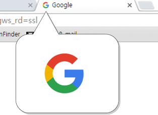

HTML
HTML
HTML(HyperText Markup Language)은 웹페이지를 만들기 위한 언어입니다.
태그(Tag)
태그는 정보를 정의하는 방식을 의미합니다.
- 태그는 열린 태그와 닫는 태그가 있습니다.
- 닫는 태그에는 '/'가 있어야 합니다.
- 닫는 태그가 필요 없는 태그도 있습니다.(<br />, <hr />, <img / >, <meta / >)
- HTML5에서는 '/'가 생략이 가능합니다.(<br>, <hr>, <img>, <meta>)
블록 요소/인라인 요소
블록 요소는 박스, 인라인 요소는 텍스트를 의미합니다.
- 블록 엘리먼트(Block Element)
- 독립된 박스 영역으로, 한 줄에 하나의 블록 요소만 표현할 수 있습니다.
- 블록 요소에는 블록 요소와 인라인 요소를 포함 할 수 있습니다.
- <div>, <p>, <h1~h6>, <ul>, <li>
- 인라인 엘리먼트(Inling Element)
- 독립된 텍스트 영역으로, 한 줄에 여러개의 인라인 요소를 표현할 수 있습니다.
- 인라인 요소에는 블록 요소가 포함될 수 없지만, 인라인 요소는 포함 할 수 있습니다.
- <span>, <a>, <strong>, <em>, <img>

파비콘(favicon)
즐겨찾기(favorites)와 아이콘(icon)의 합성어로, 인터넷 웹 브라우저의 주소창에 표시도는 웹페이지를 대표하는 아이콘입니다.
- 사이즈: 16x16, 32x32x, 48x48, 64x64
- 확장자: .ico .png .jpg .gif (.ico는 모든 브라우저 지원)
- <link rel="shortcut icon" href="favicon.ico">
- 파비콘 이미지 만들기
DTD(Document Type Declaration)선언
웹 페이지를 제작하기 위해서는 웹 문서 형식 유형을 설정하여야 합니다.
독타입을 설정하지 않거나 잘못 설정하면 브라우저에 따라 화면이 다르게 나오거나 렌더링이 달라지기 때문에 독타입을 설정해야 합니다.
<!-- html5 -->
<!DOCTYPE html>
<!-- HTML 4.01 Strict -->
<!DOCTYPE HTML PUBLIC "-//W3C//DTD HTML 4.01//EN" "http://www.w3.org/TR/html4/strict.dtd">
<!-- HTML 4.01 Transitional -->
<!DOCTYPE HTML PUBLIC "-//W3C//DTD HTML 4.01 Transitional//EN" "http://www.w3.org/TR/html4/loose.dtd">
<!-- HTML 4.01 Frameset -->
<!DOCTYPE HTML PUBLIC "-//W3C//DTD HTML 4.01 Frameset//EN" "http://www.w3.org/TR/html4/frameset.dtd">
<!-- XHTML 1.0 Strict -->
<!DOCTYPE html PUBLIC "-//W3C//DTD XHTML 1.0 Strict//EN" "http://www.w3.org/TR/xhtml1/DTD/xhtml1-strict.dtd">
<!-- XHTML 1.0 Transitional -->
<!DOCTYPE html PUBLIC "-//W3C//DTD XHTML 1.0 Transitional//EN" "http://www.w3.org/TR/xhtml1/DTD/xhtml1-transitional.dtd">
<!-- XHTML 1.0 Frameset -->
<!DOCTYPE html PUBLIC "-//W3C//DTD XHTML 1.0 Frameset//EN" "http://www.w3.org/TR/xhtml1/DTD/xhtml1-frameset.dtd">언어 속성 설정
컨텐츠의 언어를 인식하고 얻은 정보를 추출하는데 사용합니다.
<!-- html5 -->
<html lang="ko">
<!-- html4 -->
<html lang="ko" xml:lang="ko" xmlns="//www.w3.org/1999/xhtml"> meta 데이터 설정
웹 사이트에 대한 여러가지 정보를 제공합니다.
| meta 데이터 | 설명 | |
|---|---|---|
| charset | 웹 페이지 언어 설정 | |
| author | 웹 페이지를 만든 사람 | |
| description | 웹 페이지를 만든 서령 | |
| keywords | 웹 페이지를에 대한 키워드 | |
| generator | 웹 페이지를 만든 소프트웨어의 이름 |
<meta charset="UTF-8">
<meta name="author" content="sohi">
<meta name="description" content="웹 표준을 준수한 사이트 만들기 예제입니다.">
<meta name="keywords" content="웹표준, 웹접근성, 웹사이트만들기">
<meta name="generator" content="sublime text">특수문자(Entity Code)
HTML에 본문에 바로 쓸 수 있는 특수 문자입니다.
| 문자 | 이스케이핑 |
|---|---|
| < | < |
| > | > |
| & | & |
| space | |
| " | " |
| “ / ” | “ / ” |
| ‘ / ’ | ‘ / ’ |
| © | © |
| · | · |
| • | • |
| … | … |
HTML5shiv
Internet Explorer9 이전 버전에서 HTML5 요소의 스타일을 활성화하는 JavaScript 해결 방법입니다.
- Internet Explorer 9보다 오래된 IE 브라우저에 대한 호환성을 제공하려면 HTML5shiv가 필요합니다.
- HTML5Shiv는 <head>태그 안에 배치됩니다 .
- HTML5Shiv는 <script>태그 에서 참조되는 자바 스크립트 파일입니다 .
<head>
<!--[if lt IE 9]>
<script src="경로명/html5shiv.js""></script>
<![endif]-->
</head>익스플로러 호환성 보기
IE8이 웹페이지에 접근했을때, 어떤 렌더링 엔진을 사용할 것인지를 선택하게 하는 용도의 버튼입니다.
<meta http-equiv="X-UA-Compatible" content="IE=edge">- 현재는 구 익스플러어를 많이 사용하지 않기 때문에 잘 쓰지않는 속성입니다.
- 호환성 보기 버튼을 클릭함으로써, 웹표준을 지키지 않던 브라우저의 렌더링 방식(관용모드)으로 작동하게 됩니다.
- X-UA-Compatible 속성 값은 IE에서만 작동하는 비표준 속성입니다.
- content="IE=5"; - 관용모드(quirks mode)로 지정된 DOCTYPE에 상관없이 IE5 렌더링 방식이 사용됩니다.
- content="IE=7"; - IE7 표준모드로 지정된 DOCTYPE에 상관없이 IE7 표준 모드 렌더링 방식이 사용됩니다.
- content="IE=EmulateIE7"; - IE7 에뮬레이션 모드로 지정된 DOCTYPE에 따라 IE7 표준모드나 관용모드로 렌더링됩니다.
- content="IE=8"; - IE8 표준모드로 지정된 DOCTYPE에 상관없이 IE8 표준모드로 렌더링됩니다 .
- content="IE=EmulateIE8"; - IE8 에뮬레이션 모드로 지정된 DOCTYPE에 따라 IE8 표준모드나 관용모드로 렌더링됩니다.
- content="IE=edge"; - 최신모드로 지정된 DOCTYPE에 상관없이 IE8 이상 버전에서 항상 최신 표준 모드로 렌더링됩니다.
조건부주석
익스플로러에서만 작동하는 조건문으로, IE 브라우저별로 컨트롤 할 수 있습니다. (익스플로어 전용 버전 체크 도구)
- 브라우저 판별: 각각의 브라우저에 맞는 클래스명을 부여해서 컨트롤 할 수 있습니다.
<!--[if lt IE 6]><html class="lt-ie6" lang="ko"><![endif]-->
<!--[if lt IE 7]><html class="lt-ie7" lang="ko"><![endif]-->
<!--[if lt IE 8]><html class="lt-ie8" lang="ko"><![endif]-->
<!--[if lt IE 9]><html class="lt-ie9" lang="ko"><![endif]-->- 스크립트 판별: 각각의 브라우저에 맞는 스크립트를 설정하여 컨트롤 할 수 있습니다.
<!--[if lt IE 9]>
<script type="text/javascript">
alert("현재 당신이 보는 브라우저는 오래된 브라우저입니다. 최신 브라우저로 업데이트 해주세요")
</script>
<![endif]-->조건부 기호
- ! : 아니다(not) / [if !ie] ie가 아니라면
- lt : 작다(less than) / [if lt ie 9] ie9 보다 작다면
- lte : 작거나 같다(less than equal) / [if lte ie 8] ie8 보다 작거나 같다면
- gt : 크다(greater than) / [if gt ie 6] ie6 보다 크다면
- gte : 크거나 같다(greater than equal) / [if gte ie 7] ie7 보다 크거나 같다
- () : 우선처리
- & : 그리고(and) / [if (gte ie 7)&(lt ie 9)] ie7 이상이고 ie9 미만이라면
- | : 또는(or) / [if (ie 7)|(ie 8)] ie7 이거나 ie8 이라면
Modernizr
사용자 브라우저의 HTML5, CSS3의 기능들을 감지하고 지원여부를 판별하는 JavaScript 라이브러리입니다. (브라우저 기능검사 도구)
파일을 연동하면 html태그에 사용 가능한 기능들이 표현됩니다. 지원하지 않는 기능은 no가 표시됩니다
<script src="js/modernizr-custom.js"><script>if(Modernizr.canvas){
//canvas를 지원할 경우
}else{
//canvas를 지원하지 않을 경우
}HTML5에서 새로 생긴 태그
새로운 구조적 태그
- <article> - 뉴스 기사나 블로그 글 같은 독립적인 텐츠를 표시합니다. 티스토리의 경우 본문이나 보호글, 공지사항, 방명록 등 한페이지에 보여지는 부분을 넣을 수 있습니다.
- <aside> - 문서의 주요 부분을 표시하고 남는 사이드바 콘텐츠를 표시합니다.
- <bdi> - 바깥쪽의 여러 텍스트와 다른 방향으로 서식이 지정된 글의 부분을 구분하기 위해 사용됩니다.
- <command> - 사용자가 동작시킬 수 있는 명령 버튼을 정의 합니다.
- <details> - 사용자가 보거나 감출 수 있는 추가적인 상세 사항을 정의 합니다.
- <summary> - <details> 요소를 위한 제목을 정의합니다.
- <figure> - 부가적인 설명글(캡션)이 붙을 일러스트레이션, 다이어그램, 사진, 코드 목록과 같은 컨텐츠를 지정합니다.
- <figcaption> - <figure> 요소에 대한 설명글을 정의합니다.
- <footer> - 문서나 특정 구역에 대한 하단부(푸터, Footer)를 정의합니다.
- <header> - 문서나 구역의 도입 부분, 혹은 상단 네비게이션 요소의 그룹을 지정합니다.
- <hgroup> - 문서의 제목부가 여러 단계로 나눠져 있는 경우 <h1>에서 <h6>까지의 요소들을 집합으로 묶습니다.
- <mark> - 의미적으로 중요한 부분을 강조하기 위해 사용합니다. 시각적 효과는 없지만, 내용상 다른 부분보다 중요한 부분임을 표시할때 사용할 수 있습니다. 시각적 효과는 CSS를 통해 mark { font-weight:bold; color:black; }... 와 같은 형태로 적용할 수 있습니다.
- <meter> - 특정 범위내에서 특정한 수치를 나타낼때 사용하는 태그 입니다. 지정된 값은 시각적으로 게이지바 (프로그래스바) 형태로 화면에 나타납니다. 현재 크롬, 오페라 웹브라우저만 이 태그를 지원하고 있습니다.
- <nav> - 네비게이션 링크 포함된 영역임을 나타낼때 사용합니다.
- <progress> - 작업의 진행률을 프로그래스바 형태로 나타냅니다. 역시 크롬과 오페라에서만 지원되고 있습니다.
- <ruby> - 텍스트위에 주석을 달때 사용하는 태그로서, 일본어나 중국어와 같은 동아시아 문자열을 표현할때 사용합니다.
- <rt> - <ruby> 요소 하위에 사용되며, 텍스트 윗쪽에 달릴 실제 주석의 내용을 정의합니다.
- <rp> - <ruby> 문자열 주석 태그를 지원하지 않는 웹브라우저에서 표시될 메시지를 정의합니다.
- <section> - 문서의 구역을 정의합니다.
- <time> - 날짜나 시간을 정의합니다.
- <wbr> - 줄 분리 지점을 정의합니다.
새로운 미디어 요소
- <audio> - 사운드 컨텐츠를 정의합니다.
- <video> - 비디오나 영상을 정의합니다.
- <source> - <video>나 <audio> 태그 내부에 여러개의 미디어 자원을 지정합니다.
- <embed> - 외부 프로그램이나 상호 작용적인 컨텐츠를 위한 컨테이너를 정의합니다. (플러그인용)
- <track> - <video>나 <audio> 요소에 대해 텍스트 형태의 트랙 정보나 자막을 지정해 줍니다.
새로운 canvas 요소
- <canvas> - 웹상에 그래픽을 표시합니다. API와 함께 사용해 다양한 애플리케이션을 만들수 있습니다.
새로운 폼 요소
- <datalist> - 사용자가 텍스트 필드에 내용을 입력할 때 선택할 수 있는 값들을 목록으로 보여줍니다.
- <keygen> - 양식을 서버로 전송할 때 한 쌍의 키를 만들어 private key는 로컬에 저장하고 public key는 서버에 저장합니다.
- <output> - 수학적인 계산의 결과값을 표시합니다.
HTML5에서 없어진 태그
- <acronym> - 축약어 표시. <abbr> 태그로 대체합니다.
- <applet> - 애플릿 정의에 사용합니다.
- <basefont> - HTML 문서의 기본 글꼴 정의에 사용합니다.
- <big> - 텍스트를 더 크게 표시합니다.
- <dir> - 디렉토리 목록 표시에 사용합니다.
- <font> - 사용 글꼴 정의. font-family:글꼴명 CSS 속성으로 대체합니다.
- <frameset> - 프레임 구조로 페이지 레이아웃을 작성. <iframe> 또는 CSS 레이아웃 속성으로 대체합니다.
- <frame> - 프레임 구조로 페이지 레이아웃을 작성. <iframe> 또는 CSS 레이아웃 속성으로 대체합니다.
- <noframes> - 프레임 구조로 페이지 레이아웃을 작성. <iframe> 또는 CSS 레이아웃 속성으로 대체합니다.
- <isindex> - 검색어를 입력하는 한줄 입력 필드로 사용합니다.
- <s> - 텍스트 취소선 긋기에 사용. text-decoration:line-through CSS 속성으로 대체합니다.
- <strike> - 텍스트 취소선 긋기에 사용. text-decoration:line-through CSS 속성으로 대체합니다.
- <tt> - 텔레타입(타자체) 텍스트-Teletype-Text-표시에 사용. <code> 태그로 대체합니다.
- <u> - 텍스트 밑줄 긋기에 사용. text-decoration:underline CSS 속성으로 대체합니다
- <center> - 텍스트 가운데 정렬에 사용. text-align:center CSS 속성으로 대체합니다.
HTML5에서 의미가 변경된 태그
- <a> - href=”#”, href=”javascript:;”로 null link(널링크) 사용 / href 속성없이 사용하면 바로 null link(널링크)로 사용
- <adress> - 이름, 이메일주소, 전화번호 등 제작자에 대한 정보 표시 / 실제 우편 주소를 표시
- <b> - 텍스트를 진하게 / 내용이 중요하지는 않지만 진하게 표시할 때 사용
- <hr> - 단순한 가로줄 표시 / 단락 단위로 주제 변경 시 사용
- <i> - 텍스트 기울어지게 표시 / 텍스트를 기울어지게 할 뿐 아니라, 중요한 정보가 들어있지 않은 주변 요소로부터 텍스트를 따로 표시할때 사용
- <menu> - 사용하지 않도록 권고 / 실제 문서 메뉴 정보를 제공하는데 사용
- <small> - 작은 글자로 표시 / 세부 주석이나 법적 인쇄 문서에서 작은 인쇄 정보를 표시할 때 사용
- <strong> - 글자 강조 / 단순히 글자를 강조하는 것보다 중요한 내용을 표시할 때 사용
HTML Reference
A
<a>
anchor의 약자로, 하이퍼텍스트 즉 링크 역할을 하는 태그입니다.
- herf="url"; - 연결할 링크 주소를 써줍니다.
- title="링크 설명" - 해당 링크에 대한 설명을 써줍니다.
- target=
- "_self"; - 현재 창에서 열기(기본값)
- "_blank"; - 새창에서 열기
- "_parent" - 상위 레벨 창에서 열기
- "_top" - 가장 상위 창에서 열기
- "frame name" - 지정된 프레임 안에 열기
<address>
소유자 또는 작성자의 연락처를 나타내는 태그입니다.
- body 태그 안에 있으면 문서의 소유자 또는 작성자의 연락처를 나타냅니다.
- article 태그 안에 있으면 기사의 소유자 또는 작성자의 연락처를 나타냅니다.
<article>
컨텐츠의 독립적인 항목을 나타내는 컨텐츠를 의미합니다.
- article은 신문기사, 잡지, 블로그의 항목, 게시판 글 등의 독립적인 항목을 나타냅니다.
- section은 하나의 주제를 나타낸다면, article은 주제를 묶은 독립적인 컨텐츠입니다.
- section 요소 안에는 article요소를 사용할 수 있으며, article요소 안에도 section 요소를 쓸 수 있습니다.
<aside>
웹 문서의 메인 컨텐츠에 영향을 미치지 않는 사이드 컨텐츠 영역을 나타냅니다.
- aside는 메인 컨텐츠에 영향을 미치지 않는 사이드 정보, 광고 등 부분적인 정볼르 그룹화할 때 사용합니다.
B
<b>
글자 두꼐를 두껍게 하여 중요한 부분을 강조합니다. (단순히 텍스트를 진하게 표시)
<b>텍스트</b>: 텍스트
D
<div>
블록요소로, 웹페이지의 논리적 구분을 정의합니다.
E
<em>
글씨를 기울여 중요한 부분을 강조합니다. (단순히 텍스트를 기울여 표시)
<em>텍스트</em>: 텍스트
F
<footer>
웹 문서의 푸터 영역을 나타냅니다.
- footer는 저작권 정보, 회사 정보, 관련 사이트, 주소, 바닥글, 사이트 정보 등을 포함하는 컨텐츠 영역입니다.
- footer는 섹션 컨텐츠가 아닌 그룹을 나타내는 요소이기 때문에 section, article, aside 등을 포함 할 수 있습니다.
H
<h1>~<h6>
제목을 작성합니다.
<header>
웹 문서의 헤더 영역을 나타냅니다.
- header는 웹 페이지에 대한 소개, 네비게이션 영역, 테이블 영역, 검색 영억, 로고 영역을 포함하는 영역입니다.
- header는 제목태그가 포함될 수 있으며, 필수 조건은 아닙니다.
- header는 섹션 컨텐츠가 아닌 그룹화하기 위한 요소이므로 section 요소를 포함 할 수 없습니다.
I
<i>
글씨를 기울여 중요한 부분을 강조합니다. (글씨를 특별한 이유로 평범한 글자와 구분하기 위해 즉 기술적인 구문이나, 언어, 사상, 생각 등에서 다른 텍스트와 구분하기 위해 사용)
<i>텍스트</i>: 텍스트
<input>
사용자가 데이터를 입력하는 부분을 만듭니다.
- <input type="hidden"> - 사용자에게는 보이지 않지만 서버로 넘겨지는 값을 가집니다.
- <input type="text"> - 한 줄짜리 텍스트를 입력할 수 있는 텍스트 상자를 넣습니다.
- <input type="search"> - 검색 상자를 넣습니다.
- <input type="tel"> - 전화번호 입력 필드를 넣습니다.
- <input type="url"> - URL주소를 입력할 수 있는 필드를 넣습니다.
- <input type="email"> - 메일 주소를 입력할 수 있는 필드를 넣습니다.
- <input type="passward"> - 비밀번호를 입력할 수 있는 필드를 넣습니다.
- <input type="datetime"> - 국제 표준시(UTC)로 설정된 날짜와 시간(연, 월, 일, 시, 분, 초, 분할 초)을 넣습니다.
- <input type="datetime-local"> - 사용자가 있는 지역을 기준으로 날짜(연, 월, 일, 시, 분, 초, 분할 초)를 넣습니다.
- <input type="date"> - 사용자 지역을 기준으로 날짜(연, 월, 일)를 넣습니다.
- <input type="month"> - 사용자 지역을 기준으로 날짜(연, 월)를 넣습니다.
- <input type="week"> - 사용자 지역을 기준으로 날짜(연, 주)를 넣습니다.
- <input type="time"> - 사용자 지역을 기준으로 시간(시, 분, 초, 분할 초)를 넣습니다.
- <input type="number"> - 숫자를 조절할 수 있는 화살표를 넣습니다.
- <input type="range"> - 숫자를 조절할 수 있는 슬라이드 막대를 넣습니다.
- <input type="color"> - 색상 표를 넣습니다.
- <input type="checkbox"> - 주어진 항목에서 2개 이상 선택 가능한 체크박스를 넣습니다.
- <input type="radio"> - 주어진 항목에서 1개만 선택할 수 있는 라디오 버튼을 넣습니다.
- <input type="file"> - 파일을 첨부할 수 있는 버튼을 넣습니다.
- <input type="submit"> - 서버 전송 버튼을 넣습니다.
- <input type="image"> - submit 버튼 대신 사용할 이미지를 넣습니다.
- <input type="reset"> - 리셋 버튼을 넣습니다.
- <input type="button"> - 버튼을 넣습니다.
- <input type="formaction"> - 실행할 프로그램을 연결합니다. type="submit"이나 type="image"일 때 사용할 수 있습니다.
- <input type="formenctype"> - 서버로 폼을 전송했을 때 폼 데이터를 어떤 방식으로 해석할 것이니 저장합니다. type="submit"이나 type="image"일 때 사용할 수 있습니다.
- <input type="formmethod"> - 서버로 폼을 전송하는 방식(get, post 등)을 저장합니다. 이미 <form>태그 안에서 지정한 방식이 있어도 그 방식은 무시됩니다.
- <input type="formnovalidate"> - <form>태그 안에 novalidate라는 속성이 있어서 서버로 전송할 때 폼 데이터가 유효한지 여부를 표시할 수 있는데 <input>태그 안에서도 formnovalidate 속성을 이용해 유효성 여부를 표시할 수 있습니다.
- <input type="formtarget"> - 폼 데이터를 서버로 전송한 후 서버의 응답을 어디에 표시할 것인지 타깃을 지정합니다.
- <input type="height, width"> - type="image"일 때 이미지의 너비와 높이를 지정합니다.
- <input type="list"> - <datalist>에 미리 정의해 놓은 옵션 값을 <input> 안에 나열해 보여줍니다.
- <input type="multiple"> - type-="email"이나 type="file"일 때 두 개 이상의 갑을 입력합니다. <input> 태그 안에 속성 이름만 표시하면 됩니다.
M
<main>
웹 문서의 주요 컨텐츠 영역을 나타낼 때 사용합니다.
- main은 웹 페이지에서 한 번만 사용할 수 있으며, 접근성과 검색영역 노출을 향상시킵니다.
- aritcle, aside, footer, header, nav를 하위 요소로 사용할 수 있습니다.
<mark>
해당 텍스트에 하이라이트 효과를 주며 백그라운드 색상을 사지게 됩니다.
<mark>텍스트</mark>: 텍스트
N
<nav>
페이지 내에서 이동할 수 있는 네비게이션 링크 그룹입니다.
- nav는 문서의 핵심적인 페이지의 메뉴 및 서브 메뉴에서 사용하고 문서에서 주로 한 번만 사용합니다.
- 문서 안에 링크가 포함된 컨텐츠는 nav를 사용하지 않습니다.
- nav는 핵심적인 네비게이션에 사용해야 하므로, 푸터 내에 링크 그룹의 사용은 적잘하지 않습니다.
P
<pre>
Preformatted Text의 약자로, 입력한 문장 그대로 브라우저에 표현할 수 있습니다.
S
<section>
일반적으로 문서의 컨텐츠 영역을 의미합니다.
- 컨텐츠와 관련된 한 가지 주제 영역을 말합니다.
- section 태그는 문장이나 스타일링 요소가 아니기 때문에 편의성이나 영역을 위함이라면 div 태그가 좋습니다.
- section 태그는 제목이 없는 경우 섹션이라고 할 수 없기 때문에 제목을 제공해야 합니다.
- section 태그는 일반적인 주제가 아니라면 구체적인 요소(article, aside, nav)를 사용하는 것이 더 적졀합니다.
- section 태그 안에는 또 다른 section 태그를 넣을 수 있습니다.
<span>
인라인 요소로, span태그 내부에 객체가 들어가면 그 객체의 크기만큼의 공간이 할당됩니다.
<strong>
글자 두꼐를 두껍게 하여 중요한 부분을 강조합니다.(텍스트의 의미 강조)
<strong>텍스트</strong>: 텍스트
T
<table>
표를 작성합니다.
- <th> - 제목 셀을 작성합니다. <thead>의 하위에 위치합니다.
- <tr> - 행을 만듭니다.
- <td> - 열(칸)을 만듭니다.
- <caption> - 표의 caption(설명)을 작성합니다.
- <colgroup> - 열의 속성을 그룹지어 관리합니다.
- <col> - 열의 넓이, 색상 등을 설정합니다.
- <thead> - 표의 제목 영역을 나타냅니다.
- <tbody> - 표의 본문 영역을 나타냅니다.
- <tfoot> - 표의 footer영역을 나타냅니다.
- rowspan; - 행(상하)을 병합합니다.
- colspan; - 열(좌우)을 병합합니다.